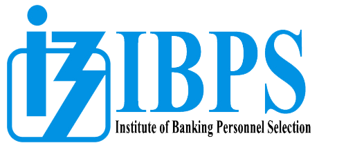
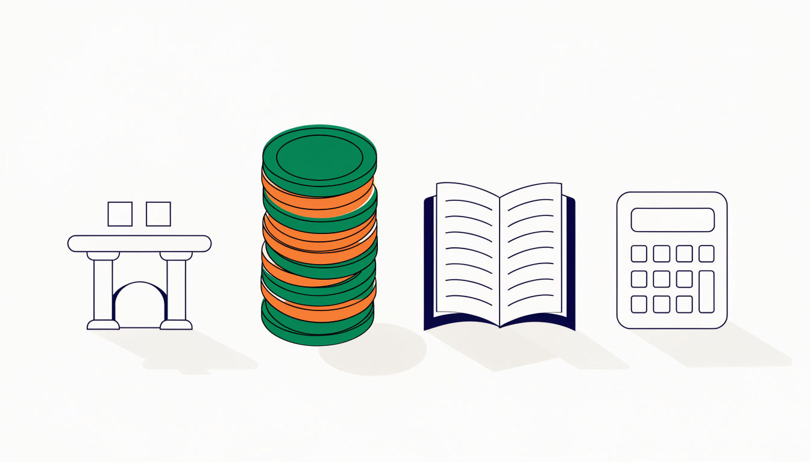

Sector guide
Banking jobs: who can apply, and how selection works
Banking recruitment explained in diagrams: which qualification unlocks which post, every selection stage, and live listings pulled from the official feed.
Not a recruiting authority. Confirm every date, fee and eligibility clause on the official notice linked from each listing.

Who can apply: qualification → post
Filter by qualification or search for a post. Confirm exact age, subject and certificate rules in the linked notice.
8 role paths
No matching posts. Try a broader search or choose all qualifications.
12th Pass
- Bank Clerk (IBPS / SBI)ClerkCash, accounts, customer service
- RRB Office AssistantClerkRural bank clerk, multipurpose
12th pass (60% for SBI). Computer literacy. Age 20–28 (relaxations apply).
Graduate
- Probationary Officer (PO)OfficerBranch management, lending, operations
- Specialist Officer (SO)OfficerIT, HR, Law, Marketing, Rajbhasha
- RRB Officer Scale IOfficerRural bank officer, all functions
- RBI Grade B OfficerOfficerCentral bank, policy, regulation
Any degree. SO needs specific qualification (B.Tech for IT, LLB for Law, etc.). Age 20–30.
Post Graduate
- RBI Grade B (DEPR/DSIM)OfficerEconomics, Statistics, Finance
- NABARD Grade A/BOfficerRural development, agriculture finance
Master's in relevant field. Age 21–30 (relaxations apply).
How selection works, stage by stage
Open a stage for what it checks. The exact order and tests can vary by notification.
-
Preliminary Exam
100 Qs, 60 min. English, Quantitative Aptitude, Reasoning Ability.
Qualifying. Cut-off per section and overall. No interview for Clerk.
-
Main Exam
200 Qs, 160 min. Reasoning, English, Quant, GA, Computer. + Descriptive (letter + essay).
Merit prepared from Main score. Descriptive qualifying.
-
Interview (PO/SO only)
20-min panel. Banking awareness, current affairs, personality, situational questions.
100 marks. Final merit = Main (80%) + Interview (20%).
-
Document Verification
All originals, caste, domicile, NOC, gap certificate.
Any discrepancy = rejection. Verify before applying.
Banking listings tracked right now
50 listings matched to this sector. Open a detail page to check its source link and current notice.
-
 Job notification
Notice regarding Engagement of Law Clerk-cum-Research Assistant(on short-term contractual basis) in Delhi State Legal Services Authority. (3.19 MB)
Job notification
Notice regarding Engagement of Law Clerk-cum-Research Assistant(on short-term contractual basis) in Delhi State Legal Services Authority. (3.19 MB)
- Admit card IBPS SO XVI Mains Admit Card 2026 Exam 1 November 2026
-
 Result / recruitment update
BOB Office Assistant Peon Final Result 2026
Closes 23 May 2025
Result / recruitment update
BOB Office Assistant Peon Final Result 2026
Closes 23 May 2025
- Result / recruitment update RBI Bank Office Attendant Score Card 2026 Closes 4 February 2026
-
 Result / recruitment update
Bihar Police BPSSC Havildar Clerk Home Guard Result 2026
Closes 5 February 2026
Result / recruitment update
Bihar Police BPSSC Havildar Clerk Home Guard Result 2026
Closes 5 February 2026
-
 Result / recruitment update
SBI Circle Based Officer CBO Marks 2026
Closes 25 February 2026
Result / recruitment update
SBI Circle Based Officer CBO Marks 2026
Closes 25 February 2026
- Result / recruitment update Reserve Bank RBI Assistant Mains Result 2026 Closes 10 March 2026
- Result / recruitment update UPCISB UP Co-operative Bank Various Post Result 2026 Closes 15 April 2026
Application checklistApply in five steps Open checklist
Use the recruiting authority’s instructions as the final word. Many portals stop allowing edits after fee payment.
Read the official notice
Confirm qualification, age as on the notice's cut-off date, fee and the last date before you register.
Register on the official portal
Use the link on the notice, not a search result. Keep the registration number and password it gives you.
Fill the form, upload photo and signature
Enter your name exactly as on your Class 10 certificate. Upload the photo and signature in the size and format the portal specifies.
Pay the fee
Pay online and save the receipt. If you claim a fee waiver, the category certificate must already be in the prescribed format.
Download the confirmation
Save the submitted application PDF and the payment receipt. Check the portal again after a day to confirm the form was accepted.
Optional detail
More sector guidance
Open only the section you need; keep the main route short and easy to scan.
Documents to keep ready
Check the official notice for exact formats, dimensions, validity dates and category-specific requirements.
- Passport photograph
Recent, plain light background, within the portal's file-size limit.
- Signature
Signed in black ink on white paper, scanned at the size the portal asks for.
- Class 10 certificate
Proves your date of birth and is the usual minimum qualification.
- Degree or marksheet
Final or provisional, whichever the notice says it accepts.
- Caste or EWS certificate
In the prescribed format from the competent authority, valid on the cut-off date.
- Domicile or residence proof
Needed only where the notice reserves posts for a state or region.
- Photo ID
Aadhaar, PAN, passport or voter card — the name must match the application.
- Fee payment proof
UPI or bank receipt, kept until the admit card is issued.
Syllabus and preparation
Use official syllabus links where available; verify the current pattern on the recruiting authority’s site.
Prelims — PO and Clerk (IBPS / SBI / RRB)
100 questions, 100 marks, 60 minutes. English 30, Quantitative Aptitude 35, Reasoning 35. Negative marking 0.25 per wrong answer. Sectional timing is not applied in the prelims.
- English Language — Reading comprehension, cloze test, error spotting, fillers, para jumbles, sentence improvement, synonyms and antonyms, idioms and phrases
- Quantitative Aptitude — Simplification and approximation, number series, quadratic equations, data interpretation (table, bar, pie, line), percentage, ratio, average, profit and loss, SI and CI, time and work, time and distance, mixture, partnership, probability, mensuration
- Reasoning Ability — Puzzles and seating arrangement (highest weight), syllogism, inequality, direction sense, blood relations, coding-decoding, alphanumeric series, order and ranking, input-output
Mains — IBPS PO / SBI PO
Objective 200 marks: Reasoning & Computer Aptitude 45 Qs, Data Analysis & Interpretation 35 Qs, General/Economy/Banking Awareness 40 Qs, English Language 35 Qs. Descriptive 25 marks (letter and essay), 30 minutes. Negative 0.25.
- Reasoning & Computer Aptitude — Machine input-output, high-level puzzles, logical reasoning, data sufficiency, computer fundamentals, networking and DBMS basics, MS Office
- Data Analysis & Interpretation — Caselet DI, radar and mixed graphs, missing DI, quantity comparison, arithmetic at mains difficulty, probability, permutation and combination
- General / Economy / Banking Awareness — RBI and monetary policy, banking terminology, financial inclusion, Union Budget and Economic Survey highlights, last six months of current affairs, static banking (headquarters, taglines, current MD and Chairman)
- English (descriptive included) — Reading comprehension including economy passages; letter and essay writing for the 25-mark descriptive paper
Interview — PO and SO
100 marks, weighted 20% of final merit (IBPS PO final merit is 80% Mains and 20% Interview). No interview for Clerk posts.
- What is asked — Banking awareness, current economic affairs, the candidate's graduation subject, home state, and situational questions on customer handling and priority sector lending
RBI Grade B — Phase 1
200 questions, 200 marks, 120 minutes: General Awareness 80, Reasoning 60, English Language 30, Quantitative Aptitude 30. Negative 0.25.
- General Awareness — RBI functions and monetary policy, banking and financial system, economic and social issues, budget, current affairs of the last six months
- Reasoning, English, Quant — Same families as IBPS but at a higher difficulty; data interpretation and puzzles dominate
RBI Grade B — Phase 2
Three papers: Economic and Social Issues (90 marks), English (descriptive, 90 marks), Finance and Management (90 marks). Phase 2 marks decide the interview call.
- Economic and Social Issues — Growth and development, inflation, monetary and fiscal policy, poverty and unemployment, social structure, globalisation
- Finance and Management — Financial system, risk management, derivatives, corporate governance, accounting, organisational behaviour, HR
- English (descriptive) — Essay, precis and comprehension at RBI standard
When and how to prepare
- 1Months 1–2 — Accuracy before speed
Learn the 20–25 question types that repeat every year (number series, quadratic, inequality, puzzles, DI) to accuracy first. Do 30 arithmetic questions and 2 puzzles daily. Do not start full mocks yet.
- 2Month 3 — Sectional timing
Add a timer: 20 questions in 15 minutes, then 20 in 12. English is the cheapest section to score — finish grammar and vocabulary rules here. Start a daily 20-minute current affairs slot; banking awareness cannot be crammed later.
- 3Month 4 — Mains-level practice
Prelims gets you shortlisted, mains gets you the job. Move DI and puzzles to mains difficulty, add computer aptitude, and write one letter and one essay every week for the descriptive paper.
- 4Month 5 — Mock cycle
Two prelims mocks a week with full analysis, plus one mains sectional. Maintain an error notebook by question type; revising it is worth more than a new book.
- 5Final 2 weeks — Slot simulation and capsule
Give mocks at the real slot time. Revise your own banking-awareness capsule, formulae and error notebook. Stop new topics.
Career path after joining
Progression depends on cadre, service rules, seniority and departmental exams. Confirm details for the specific post.
- 1 Clerk / Office Assistant (Level 1-2)
- 2 Probationary Officer / Scale I (Level 7)
- 3 Manager / Scale II (Level 8-9)
- 4 Senior Manager / Scale III (Level 10-11)
- 5 Chief Manager / AGM / DGM (Level 12-14)
Practical details to verify
These checks vary by recruitment; follow the current notification where it differs.
-
IBPS PO and SBI PO are the most competitive. 10 lakh+ applicants for 4000–5000 vacancies.
-
Clerk has no interview — pure merit. PO has interview (20% weight). Focus accordingly.
-
Banking exams test speed + accuracy. 60 min for 100 Qs in Prelims = 36 sec per question.
-
SBI PO has group exercise + interview (different from IBPS). Prepare for group discussion.
-
RRB (Regional Rural Bank) exams are easier than IBPS/SBI but fewer vacancies and lower pay.
-
RBI Grade B is the most prestigious banking exam. Requires deeper economics/finance knowledge.
Frequently asked questions
What is the difference between IBPS PO and SBI PO?
IBPS PO recruits for 11 public sector banks (excluding SBI). SBI PO recruits only for SBI. SBI PO has group exercise + interview; IBPS PO has only interview. SBI PO pay is slightly higher.
Can a 12th pass apply for bank jobs?
Yes, for Clerk posts (IBPS Clerk, SBI Clerk, RRB Office Assistant). PO and SO require graduation. RBI Grade B requires graduation or post-graduation depending on the post.
What is the age limit for banking exams?
Clerk: 20–28 years. PO: 20–30 years. SO: 20–30 years. RBI Grade B: 21–30 years. Age relaxations: SC/ST 5 years, OBC 3 years, PwD 10 years.
How many attempts are allowed?
IBPS PO: no attempt limit (age-based). SBI PO: no attempt limit. RBI Grade B: 6 attempts for General, no limit for SC/ST/OBC/PwD.
Is there negative marking in banking exams?
Yes. 0.25 marks deducted per wrong answer in both Prelims and Mains. No negative marking in descriptive paper or interview.
Where do I find official banking notifications?
ibps.in (IBPS), sbi.co.in/careers (SBI), rbi.org.in (RBI), ibps.in (RRB). SarkariJobs+ links the official notification on every listing page.
About this guide
SarkariJobs+ is an independent tracker, not a recruiting authority. The post structure, pay levels and selection stages above are summarised from published recruitment notifications for this sector; where a notification differs, the notification wins. Listing dates, vacancy counts and fees are taken from the feed and credited to the source page.
More sectors: Defence · Employment News · IT & Technical · Judiciary · Medical & Health · Police · Railways · Revenue & Tax · SSC · Teaching · UPSC